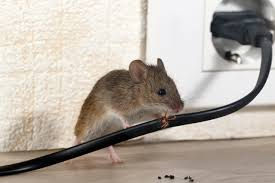

New Zealand is a place with a bunch of living things, ranging from insects to mammals to reptiles. But,
when is comes to insects some of them can cause more harm than good. Some of these insects can cause
your home to become a hazard full of disease and ready to collapse at any moment.
We Do Pest Control. We do this to ensure your home is safe from any potential dangers that may come. Whether its rodents or bugs, we will take care of it for you. Having ants or rodents in your home over time can
lead to an infestation and a large spread of disease not just to yourself, but others around you.
There are even pests that can degrade the structural integrity of your home in a matter of months if not delt with.
.jpg)
.jpg)

As we are people of New Zealand who care deeply of the environment and the community it turns to us as a responsibility to show kaitiakitanga toward the environment. Kaitiakitanga is about showing guardianship and protection toward the environment, which is what we try to achieve. So I ask that when you or your fellow New Zealander needs help from pests that you call on us for aid so we can do out part in keeping you safe and the environment.